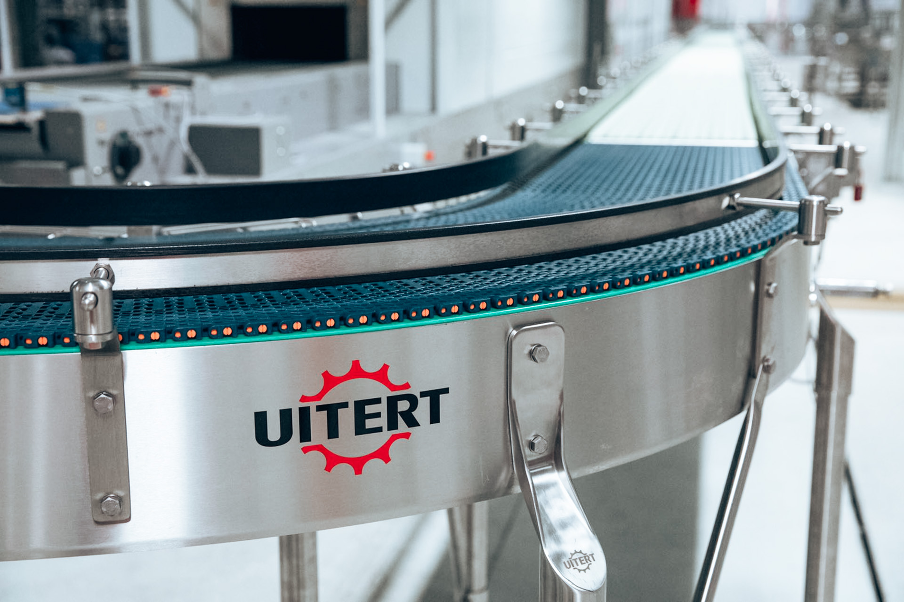

Qimarox Palletiser
Efficiënt palletiseren met hoge capaciteit. Qimarox palletisers automatiseren het stapelen van dozen, trays en andere verpakkingen op pallets — met nauwkeurige laagvorming, flexibele stapelpatronen en een modulaire opbouw.
Hoge capaciteit, flexibel inzetbaar
- Lowrunner- en Highrunner-uitvoeringen beschikbaar
- Tot 4.380 verpakkingen per uur, afhankelijk van de toepassing
- Geschikt voor uiteenlopende producten, palletformaten en stapelpatronen
- Compleet geïntegreerd in nieuwe of bestaande productielijnen
Waarom een Qimarox palletiser
Qimarox palletisers combineren hoge capaciteit met nauwkeurige laagvorming en flexibele configuratiemogelijkheden.
Hoge capaciteit
Tot 4.380 verpakkingen per uur, afhankelijk van product, stapelpatroon, uitvoering en lay-out.
Flexibele stapelpatronen
Geschikt voor uiteenlopende patronen, waaronder open patronen, schoorsteenpatronen en andere complexe configuraties.
Gebruiksvriendelijke bediening
Stapelpatronen en machineparameters zijn eenvoudig via het bedieningspaneel in te stellen en aan te passen.
Stabiele palletopbouw
Gemotoriseerde laaggeleidingen en stapelplaten positioneren iedere laag nauwkeurig voor stabiele pallets.
Compact en modulair
De modulaire opbouw biedt verschillende mogelijkheden voor productinvoer, pallettoevoer en afvoer van volle pallets.
Lowrunner of Highrunner
Afhankelijk van invoerhoogte en beschikbare ruimte kiezen we de uitvoering die het beste bij uw lijn past.
De juiste uitvoering voor uw product
Qimarox heeft verschillende palletisers ontwikkeld voor specifieke producten en industrieën, zodat de machine kan worden afgestemd op productkenmerken, verpakkingsformaat en gewenste capaciteit.

Meer dan alleen de machine
Van Uitert levert meer dan de Qimarox palletiser alleen: wij ontwerpen en realiseren de complete installatie eromheen, zodat alle onderdelen als één systeem samenwerken.
- Productaanvoerbanen
- Lege-palletmagazijn
- Pallettransport
- Tussenlegvelmagazijn
- Integratie van labellers, wikkelaars en omsnoeringsmachines
- Veiligheidsvoorzieningen en hekwerk
- Centrale PLC-besturing en lijnintegratie
Van engineering en assemblage tot installatie en inbedrijfstelling: u heeft één aanspreekpunt voor de complete palletiseeroplossing.
Andere product handling-oplossingen
Depalletiser
Pallets automatisch en gecontroleerd leeghalen.
Meer infoRobot Palletiser
Robotgestuurd palletiseren voor wisselende productmixen.
Meer infoRobot Inpakker
Producten nauwkeurig in kratten of dozen plaatsen.
Meer infoAlle handling-oplossingen
Bekijk het volledige overzicht van product handling.
Bekijk overzichtInteresse in een Qimarox palletiser?
We denken graag mee over capaciteit, stapelpatroon en integratie in uw bestaande lijn.